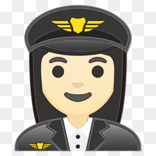

Up Above In the Sky....

Secondary School Education
For pilot training course, candidates must have qualified 10+2 in science stream with a minimum score of 50% marks.
Mathematics and Physics are the mandatory subjects for candidates who want to have a flying career.
How to become a pilot after 12th grade ?
An airline pilot requires a bachelor’s degree in any subject, whereas a commercial pilot usually needs a high school diploma or equivalent.
Some of the flight schools are part of 2-4 year colleges/universities offering the desired aviation or aeronautics degree, approved by the Federal Aviation Administration (FAA).
If you are aspiring to become a pilot then, you are required to achieve a certain number of flight training hours to earn a license.
The training hours depend upon the desired type of pilot program.
For instance, for a commercial pilot’s license, 250 hours of flying is needed, and 1,500 hours of flight time for an airline pilot.
Formal training equips you with basic education, however, to gain in-depth knowledge and experience, you can hire a personal instructor or even join the military for exposure.
The first step is to complete the required number of hours of flight experience, followed by a written assessment exhibiting your flying abilities and clearing the physical test.
The key is to be confident and prepared.
The list of major pilot licensing issued by the Civil Aviation Authority (CAA) in each country is as follows:
Private Pilot License (PPL)
Commercial Pilot License (CPL)
Airline Transport Pilot License (ATP)
Multi-crew Pilot License (MPL)
Commercial Multi-Engine Land (CMEL)
Certified Flight Instructor (CFL)
A lot of airline companies require pilots to take aptitude and psychological tests as a precondition for employment. Once placed, pilots undergo further weeks of training and flight experience to get a hang of an adventure as co-pilots.
Leaping from pilot to the rank of a captain completely depends on seniority and experience. You will have to clear additional FAA written and practical exams to obtain more flight ratings. You can continue learning and exploring the changes in the industry.
Civil Aviation
To take this route to become a pilot, you need to gain a commercial pilot certification from a certified authority which is the Directorate of General of Civil Aviation in India.
As a commercial pilot, you will be flying a specific aircraft for an airline.
Indian Defense Forces (Air Force)
If you are willing to clear the competitive entrance exams for Indian Defence Forces, then taking the Airforce route to become a pilot is the suitable one for you.
The shortlisted candidates from the rigorous admission process are trained for 3 years at the National Defence Academy, Khadakwasla. For getting admisssion here, you'll have to qualify NDA exam and then you can choose the flying branch of IAF.
Best Colleges and Universities In India
Indira Gandhi Rashtriya Uran Academy
Bombay Flying Club
Rajiv Gandhi Academy of Aviation Technology
Madhya Pradesh Flying Club
National Flying Training Institute
Ahmedabad Aviation and Aeronautics Limited
CAE Oxford Aviation Academy
Government Flying Training School
OFAA - Orient Flights Aviation Academy
Indian Aviation Academy